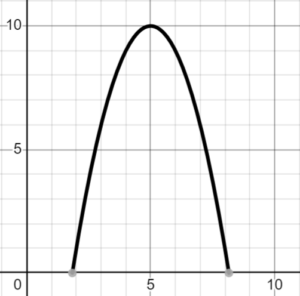
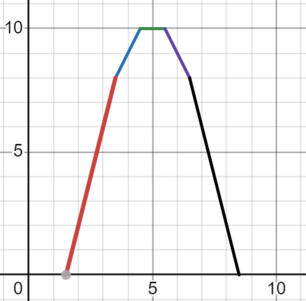
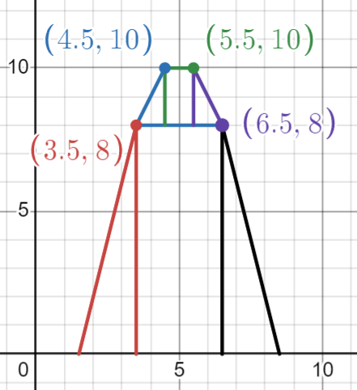
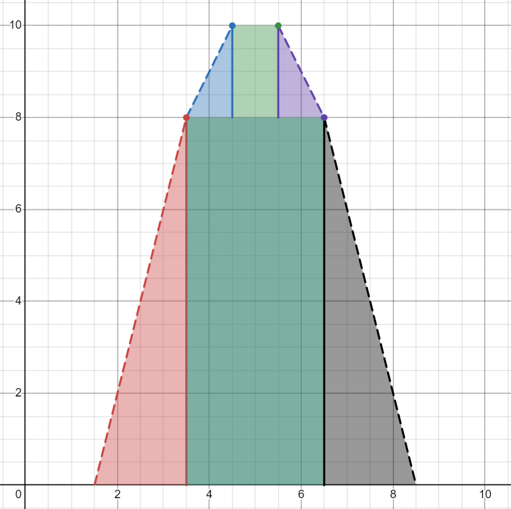
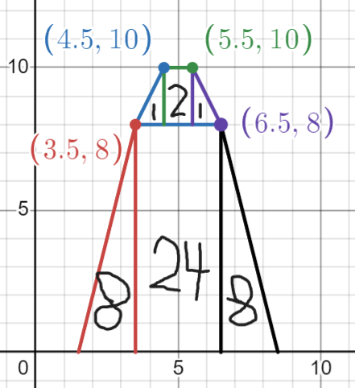
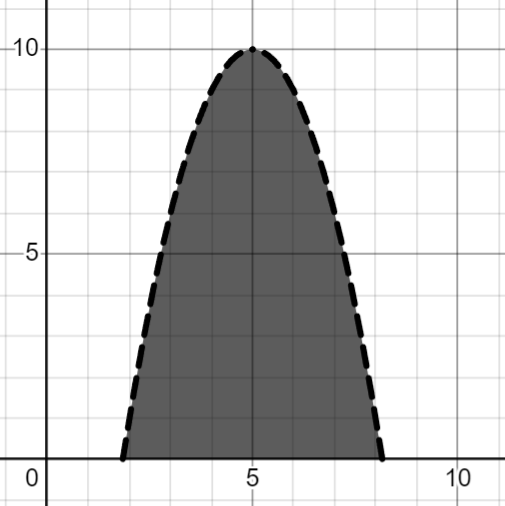
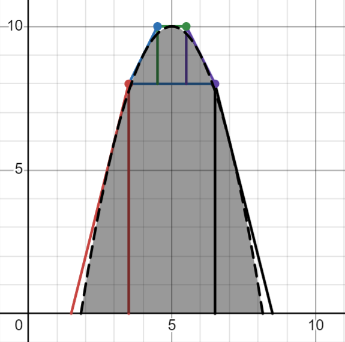
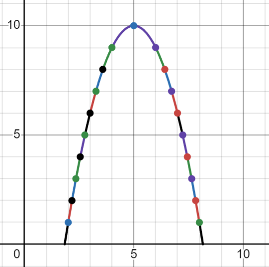
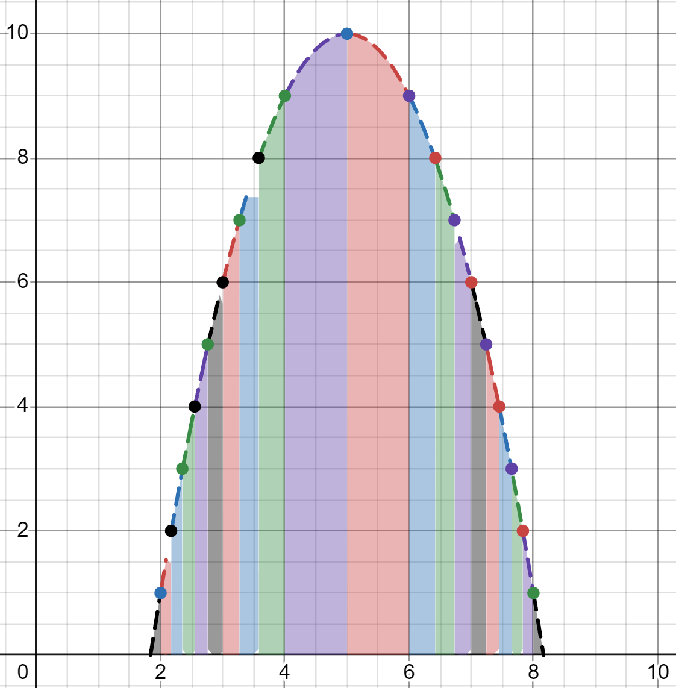

Concept Introduction
Chapter 0 - Page 10
Why do we do Calculus?
Well what if I want to know the area under this curve?

Our best bet is to make an estimation, using the different slopes we've found around the graph
Since this is our original graph, we can use our previous estimation graph

Then we can find the area of this graph
One way of doing this is by breaking it up into shapes, finding the area of each shape and adding them up
 
Below you are given the area of each shape

Add it all together and you get:
24 + 8 + 8 + 2 + 1 + 1=
Pictured on the LEFT is the area of our original function, the RIGHT shows the original function over our estimate


How close is our estimate to the actual area?
How would you describe our estimate of 44?
Is it an:
Or an:
By that logic, if we found 19 slopes along this graph

Then repeated the process to find the area
And pretend the gaps are filled in

Would our next estimation be:
Or: